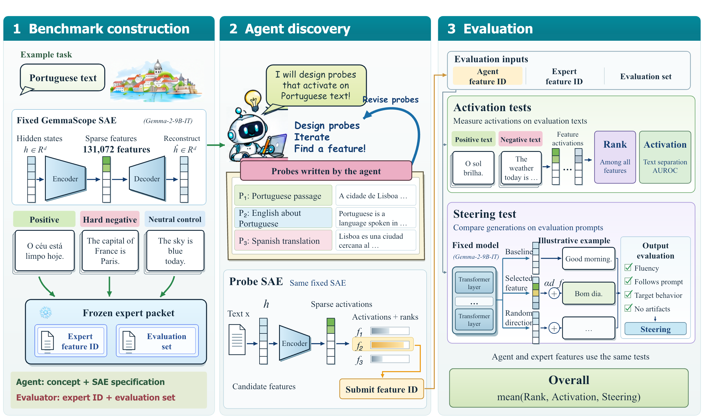

SAEScientist-Bench: Can AI Agents Conduct Autonomous SAE Interpretability Research?
SAEScientist-Bench evaluates whether AI agents can recover semantically specified SAE features using restricted activation probes and validates them through held-out activation and causal steering.